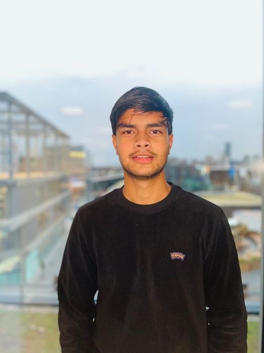

Communication
Practised sharing ideas in a university group presentation and communicating with customers in hospitality roles.
Evidence: Presentation & CVA business student at Ravensbourne University London, building skills through learning, collaboration and hands-on experience.

I'm Dennish, a student with a background in hospitality and a growing interest in understanding how businesses work.
I'm studying at Ravensbourne University London. Through my Business Landscape module, I'm exploring the business environment and developing the skills that will support my future career.
Before university, I worked in customer-facing hospitality roles in Kathmandu, Nepal. These experiences introduced me to customer service, teamwork, communication and adapting to busy working environments.
Business student · The Business Landscape module
Higher Education in Science · Kathmandu, Nepal · Completed 2022
The Business Landscape assessment asks me to show evidence of employability skills. These are examples linked to my studies and previous work.
Practised sharing ideas in a university group presentation and communicating with customers in hospitality roles.
Evidence: Presentation & CVWorked alongside classmates during group activities and with colleagues in restaurant service roles.
Evidence: Group photo & CVDeveloping my ability to research, take notes and study business topics as part of university learning.
Evidence: Classroom study photoGained hands-on experience receiving orders, assisting customers and responding to their requests.
Evidence: Restaurant work experienceWorked across different hospitality roles and schedules while responding to changing customer needs.
Evidence: CVBuilding an analytical approach to business challenges and bringing practical experience from customer-facing work.
Evidence: Business module & CVMoments from my studies, including a group presentation and classroom learning activity. Click an image to see the original.
A shared presentation on the hospitality sector gave me a chance to practise presenting, listening and working with classmates.
Taking part in university learning activities and working on my laptop are part of how I'm developing study habits and confidence with business topics.
My aim is to connect what I learn in the classroom with the communication, teamwork and customer service skills I have developed through work.
Key areas required by my BSM24102 assignment brief. These are topics and frameworks for analysis, not claims of completed research findings.
PESTLE analysis of external opportunities and challenges.
Porter's Five Forces, competition and changing market trends.
Responsible business practices, labour and environmental considerations.
Turning business analysis into practical, evidence-based decisions.
Experience and qualifications drawn from the CV included in my README.
Glocal Restaurant and Bar · Kathmandu, Nepal
Processed orders, assisted customers with menu choices and payments, and adapted to different shifts.
Glocal Restaurant and Bar · Kathmandu, Nepal
Served customers in busy periods, coordinated with colleagues and helped maintain service standards.
A one Cafe · Kathmandu, Nepal
Learned beverage preparation, worked with coffee-making equipment and supported customer service.
Thank you for exploring my portfolio. Visit my LinkedIn profile to learn more about my professional journey.
Connect on LinkedIn